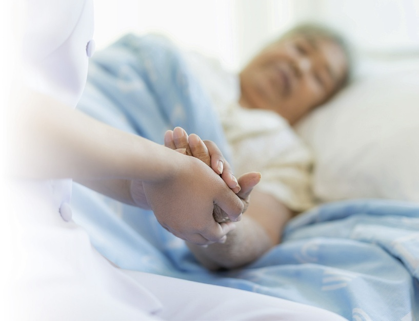
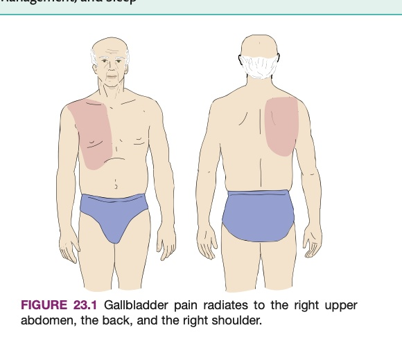
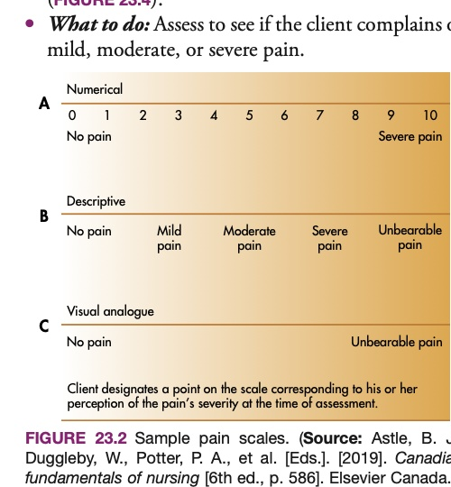
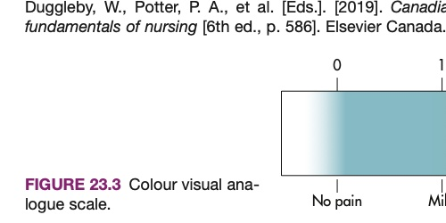
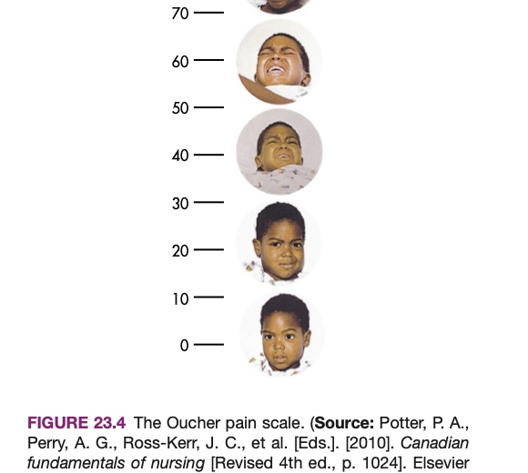
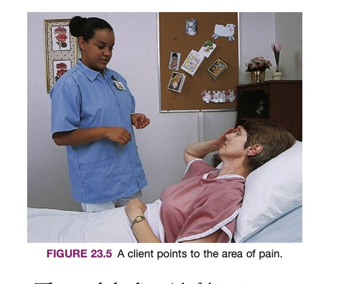
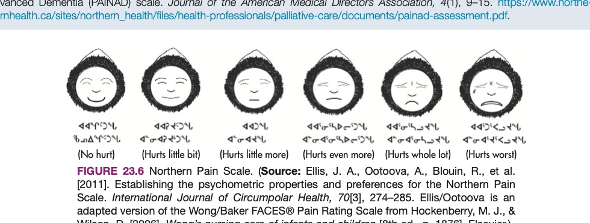

严格依据加拿大 Mosby/Elsevier 5th 权威原版全真还原，逐页覆盖全人舒适环境营造（温湿度、通风、降噪、气味控制）、疼痛神经生理分类（急性、慢性、放射痛、牵涉痛、幻肢痛）、客观评估量表（NRS、VAS、Oucher、认知障碍 PAINAD 量表及北方原住民量表）、非药物舒缓措施与背部推拿技巧、各年龄段睡眠生理需求及失眠梦游症综合防范规程。

A comfortable, quiet environment promotes physical rest, psychological peace, and restorative sleep. (Photo: iStockphoto/ake1150sb)
舒适、宁静且温度适宜的居住环境有助于促进身心安宁、消除疲惫并保障恢复性深睡眠。（官方原版教材配图）
After reading this chapter, the learner should be able to do the following: / 学习完本章后，学员应能够做到以下各项：
第23章 专业术语解析（涵盖急性痛、慢性痛、失眠症、幻肢痛、放射痛与牵涉痛）
Mastery of pain and comfort terminology enables support workers to communicate clinical observations accurately and advocate on behalf of clients suffering in silence. The interactive glossary below provides phonetic guidance, bilingual definitions, and textbook references.
精准掌握疼痛与舒适科学专业术语，使支持工作人员能够专业、准确地向医疗团队反馈临床观察，为默默忍受病痛折磨的照护对象发声代言。以下交互式术语表提供国际音标、中英双语详释及原著页码对照。
| Term / 术语 | Phonetic / 音标 | Definition (EN / ZH) / 释义 | Page / 页码 |
|---|
整体全人照护视角、温度适宜性与无气味执业红线
Every person is an individual who is shaped by a unique blend of genetics, environmental influences, and experiences. In Chapter 6, concepts such as health, wellness, illness, and disability were introduced. It must be emphasized that it is important to understand that a client’s culture and experiences, joys, sorrows, needs, ability to think and make decisions, and ability to interact with others will all have an impact on the client’s feelings of comfort and well-being (see Chapters 7, 8, and 11). Therefore, to provide good care, it is necessary to use a holistic approach to client care. Support workers can play a key role in promoting the comfort and well-being of clients by understanding their psychosocial needs and knowing ways to help them feel safe, comfortable, and relaxed.
每个人都是独一无二的生命个体，其身心特质由独特的遗传基因、生活环境与人生经历共同塑造。在第6章中，我们探讨了健康、安康、疾病与残障的核心概念。必须特别强调的是，照护对象的文化背景、人生经历、喜怒哀乐、个性化需求、认知决策能力以及与他人的社交互动方式，都会对其舒适感与整体安康产生深远影响（见第7、8与11章）。因此，要提供卓越的支持性照护，必须秉持全人照护（Holistic Approach）理念。通过敏锐体察照护对象的心理社会需求，熟练掌握协助其获得安全感、身体放松与内心宁静的方法，支持工作人员在提升案主舒适品质中扮演着无可替代的关键角色。
A comfortable client is not in any physical or emotional pain and feels content and at peace. Age, illness, pain, and inactivity, as well as factors such as temperature, ventilation, odours, noise, lighting, and feeling safe, all affect a person’s comfort and feelings of well-being.
处于舒适状态的照护对象没有任何躯体疼痛或精神痛苦，内心感到从容知足与平和宁静。年龄衰老、疾病困扰、疼痛刺激与活动受限，以及环境温度、通风对流、异味刺激、噪音干扰、采光照明与安全感等物理环境要素，时刻影响着个体的身心舒适感与幸福感。
Most people are comfortable when the room temperature is between 20°C and 23°C (68°F–74°F). Infants, older persons, and people with illnesses generally need higher room temperatures for comfort. In home care, clients set the temperature they prefer; provide extra blankets or warm clothing if they worry about heating costs.
绝大多数健康人群在 20°C 至 23°C（68°F~74°F）的室温下感觉最为舒适。婴儿、高龄长者及虚弱患病人群皮下脂肪菲薄且体温调节中枢迟钝，通常需要略高的室温才能保证舒适。在居家照护中应尊重长者的温度设定；若长者因取暖电费开支顾虑而受冻，支持人员应主动为其增添保暖衣物或松软盖被。
Stale, stuffy air impairs comfort. Facilities utilize centralized ventilation systems. In home care, open windows and doors as the client desires. Protect clients from chilling drafts by ensuring they are warmly dressed and seated away from direct drafts.
污浊沉闷的空气会直接损害身心舒适。机构通常配备中央空气循环系统；在居家照护中，可在长者同意下开窗换气。同时必须严防穿堂风（Drafts）直接吹袭长者身体，确保其衣着保暖并远离正对门窗的迎风口。
Body fluids, wound drainage, breath, and smoking odours cause deep embarrassment and physical nausea. CRITICAL RULE: NEVER wear perfume, cologne, aftershave, or scented lotions at work! Many clients have severe respiratory allergies, chemical sensitivities, or nausea triggered by artificial fragrances.
排泄物、伤口渗液及口气、烟味常令长者感到难堪与作呕。核心执业铁律：在工作岗位上绝对严禁喷洒任何香水、古龙水、须后水或使用带香味的润肤乳！许多虚弱患病长者对人工合成香精极度敏感，可瞬间诱发剧烈哮喘支气管痉挛或严重恶心眩晕。
Sorrentino 原版教材第 23 章共收录 7 个疼痛分类、痛觉神经传导与睡眠障碍核心学术词汇。支持实时模糊检索及「紧凑表格 / 记忆卡片」双模态自由切换。
| 英文术语 / 临床概念 | 中文对照 / 原书页码 | 教材标准学术释义与临床界定 |
|---|---|---|
| acute pain /əˈkjuːt peɪn/ | 急性疼痛 p. 514 |
Sudden pain due to injury, disease, trauma, or surgery; it generally lasts less than 6 months.
急性疼痛：因创伤、疾病、意外或外科手术突然发生并伴随组织损伤的急性疼痛，通常持续少于6个月并随伤情愈合而缓解。
|
| chronic pain /ˈkrɑː.nɪk peɪn/ | 慢性疼痛（持续性疼痛） p. 514 |
Pain that lasts longer than 6 months; it may be constant or occur off and on. Also known as persistent pain.
慢性疼痛（持续性疼痛）：持续超过6个月以上的长期疼痛，可呈持续性或断断续续发作，如关节炎与晚期肿瘤癌痛。
|
| insomnia /ɪnˈsɑːm.ni.ə/ | 失眠症 p. 523 |
A persistent condition in which the person cannot go to sleep or stay asleep throughout the night.
失眠症：一种长期存在的慢性睡眠障碍，表现为难以入睡、夜间频繁醒来无法维持睡眠或清晨过早醒来。
|
| persistent pain /pɚˈsɪs.tənt peɪn/ | 持续性疼痛 p. 514 |
See chronic pain.
持续性疼痛：参见慢性疼痛。
|
| phantom limb pain /ˈfæn.təm lɪm peɪn/ | 幻肢痛 p. 514 |
Pain felt in a body part that is no longer there.
幻肢痛：在已被截肢切除、物理上已不存在的肢体部位上感知到的真实剧烈疼痛，源于大脑中枢神经记忆与神经残端刺激。
|
| radiating pain /ˈreɪ.di.eɪ.tɪŋ peɪn/ | 放射性疼痛 p. 514 |
Pain that is felt not just at the site of tissue damage but extends to nearby areas.
放射性疼痛：不仅在组织原发受损部位感到疼痛，且疼痛沿神经通路向邻近周围解剖区域广泛扩散延伸（如心肌梗死痛放射至左肩下颌）。
|
| referred pain /rɪˈfɝːd peɪn/ | 牵涉痛（转属痛） p. 514 |
Pain that is felt in a part of the body separate from the source of the pain.
牵涉痛：感知到疼痛的解剖部位与产生疼痛的深部内脏病灶来源彼此分离、相隔甚远（如肾结石在腹股沟区产生剧烈绞痛）。
|
病区与居家降噪减噪实务指引、采光眩光控制与家园化温馨居室营造
Odour Control Protocols: Never wear clothing (including underwear) that has been exposed to cooking odours or cigarette smoke in the workplace. Wash hands and brush teeth after meals. To eliminate odours in any care setting: (1) Empty and clean bedpans, urinals, commodes, and emesis basins promptly; (2) Change and dispose of soiled linens and clothing immediately; (3) Clean clients who are wet or soiled by urine, feces, vomit, or wound drainage without delay; (4) Dispose of incontinence and ostomy products promptly in sealed bags; (5) Keep laundry hampers tightly covered.
消除气味临床操作规范：绝对不要穿着带有厨房油烟味或二手烟味的衣物（包括内衣）进入照护现场。用餐后务必认真洗手刷牙。在任何照护场所控制异味的核心操作：(1) 便盆、尿壶、坐便椅及呕吐肾形盘一旦使用完毕立即倾倒清洗消毒；(2) 沾染污渍的被单衣物立即撤换并规范密闭处置；(3) 一旦照护对象被尿液、粪便、呕吐物或创面渗液污染，立即为其进行温和彻底的皮肤清洁；(4) 失禁垫及造口袋废弃物立即装入防漏袋严密封口丢弃；(5) 脏污被服收集桶盖始终严密盖紧。
Noise Control: Ill clients are sensitive to noise. Health care facilities can be loud, distressing environments. The clatter of equipment, clanging bedpans, ringing phones, television sets, elevator dings, and loud staff conversations in hallways can cause agitation, sleep disruption, elevated blood pressure, and increased pain perception.
环境噪音控制：患病体弱的长者对外界异常声音极度敏感。医疗照护机构往往充满机械杂音：器械碰撞声、金属便盆撞击声、刺耳电话铃声、电视机外放声、电梯提示音以及工作人员在走廊交谈嬉笑声，极易引发长者烦躁惊恐、破坏深睡眠、升高交感神经血压并加剧疼痛感知。
Lighting: Good lighting supports safety, but glare causes eye fatigue, headaches, and agitation. Adjust window blinds and shades to admit soft, natural daylight while blocking harsh sun glare. Ensure hallways and resident rooms have soft, indirect lighting during the evening, and maintain low-wattage night lights to prevent disorientation and nighttime falls.
采光与照明控制：充沛的光照是保障长者活动安全的必备条件，但强烈直射的眩光（Glare）会导致眼部疲劳、诱发剧烈头痛并加重谵妄躁动。应合理调节百叶窗与遮光窗帘，引入柔和均匀的自然漫射光，避开正午强光直射。夜间在走廊及居室配置柔和的间接光源，并彻夜点亮微光地脚夜灯（Night Light），有效防范长者夜间起夜定向障碍与意外摔伤。
急性疼痛、慢性持续性疼痛、放射性疼痛（图 23.1）、牵涉痛与幻肢痛病理鉴别

FIGURE 23.1 Gallbladder pain radiates to the right upper abdomen, the back, and the right shoulder.
图 23.1 胆囊病变放射痛解剖示意：胆囊炎症引发右上腹剧痛，并沿神经皮节向后背及右侧肩胛部广泛放射。
Pain is a warning sign from the body indicating that tissue damage has occurred or is threatened. It is subjective—pain is whatever the experiencing person says it is, existing whenever they say it does. There are several major clinical types of pain:
疼痛是机体遭受组织损伤或潜在创伤威胁时发出的生物学防御预警信号。疼痛具有完全的主观性——“疼痛就是体验者本人所说的那种感受，只要体验者主诉疼痛存在，疼痛就确凿存在”。临床上将疼痛分为以下核心主要类型：
Felt suddenly from injury, disease, trauma, or surgery when tissue is damaged; generally lasts less than 6 months and diminishes as the underlying tissues heal.
因创伤、急症或外科手术骤然爆发，通常持续短于6个月，伴随交感神经兴奋体征，随伤口修复而逐渐消退。
Lasts longer than 6 months; can be constant or intermittent. Common causes include osteoarthritis, diabetic neuropathy, osteoporosis, and cancer.
持续超过6个月以上，呈持续性钝痛或反复发作；常由退行性关节炎、糖尿病神经病变或晚期肿瘤引起，严重侵蚀心力。
Felt at the site of tissue damage and extends along nerve pathways to nearby areas (FIGURE 23.1). For example, cardiac pain radiates to the left chest, jaw, and arm; gallbladder pain radiates to the right shoulder.
不仅在原发病灶感到疼痛，且沿共用神经分布向周边区域放射传导（如心梗向左臂放射，胆囊炎向右肩背放射）。
Pain felt in a body area separate from the true anatomical source of pathology (e.g., a kidney stone causing intense pain in the groin).
痛觉体表投影位置与深部病损器官完全隔开（例如深部肾脏结石却在体表腹股沟区域引发剧烈绞痛）。
Pain perceived in an amputated limb that is no longer physically present. The pain is real, severe, and distressing, originating from central cortical memory and severed nerve trunk stimulation.
在已被截肢切除的残肢肢端感受到的真实灼痛或抽痛；绝非“胡思乱想”，源自大脑皮层神经重塑与残端神经纤维放电。
既往创伤经历、焦虑情绪、注意力焦点与跨文化疼痛表达多元谱系
Pain perception is never a simple mechanical reflex; it is filtered through complex psychological, emotional, and cultural factors:
疼痛感知绝非单纯的神经机械电信号传导，而是被复杂的心理认知、既往情绪体验与多元文化习俗深度过滤和塑造：
Culturally acquired patterns deeply shape how pain is perceived, tolerated, and communicated. In some cultures (e.g., traditional stoic or East Asian backgrounds), enduring pain in silence without showing outward emotion is considered a virtue and a mark of character; clients may completely deny pain even when suffering intensely. In other cultures, vocalizing pain loudly through crying or moaning is the culturally normative and expected way to seek community support.
文化背景深刻规范着个体对疼痛的忍耐期待与表达行为：在推崇坚忍克己的文化中，默默忍耐痛苦被视为尊严与美德，长者即使承受重创也可能面不改色并否认疼痛；而在另一些文化中，放声呻吟哭泣是寻求同情与医疗协助的正当规范表达。支持人员绝不可因长者“没有呻吟”而主观断定其“不痛”，亦不可因长者“哭喊”而轻率评判其“小题大做”！
Older persons may wrongly assume that chronic pain is an inevitable, untreatable consequence of aging, suffering in silence rather than asking for help. In clients with dementia or cognitive impairment, pain often manifests not as verbal complaints, but as sudden behavioral changes: agitation, aggression, withdrawal, refusing food, pacing, or sleep disturbances. Always report any subtle change in a senior's routine behavior to the nurse!
数字评分法（图 23.2）、视觉模拟比色量表（图 23.3）与儿童 Oucher 照片量表（图 23.4）

FIGURE 23.2 Sample pain scales: 0–10 Numeric Rating Scale (NRS) and Verbal Descriptor Scale.
图 23.2 常用临床疼痛量表：0–10 数字评分量表（0=完全无痛，10=难以想象的最剧烈剧痛）与词语描述量表。

FIGURE 23.3 Colour visual analogue scale (VAS) from white/green (no pain) to dark red (severe pain).
图 23.3 彩色视觉模拟量表（VAS）：色阶从绿色（无痛）渐变至深红（无法耐受的重度疼痛）。

FIGURE 23.4 The Oucher pain scale: dual 0–100 numeric and real photograph facial expression scale for children.
图 23.4 儿童 Oucher 疼痛量表：结合 0–100 数字刻度与真实儿童面部痛苦表情摄影照片，便于患儿精准指认。
Standard Pain Scales: Because pain cannot be measured with a thermometer or blood test, standardized rating scales provide an objective common language for clients, support workers, and nurses: (1) Numeric Rating Scale (NRS, FIGURE 23.2)—the client rates their pain from 0 (no pain at all) to 10 (the worst pain imaginable); (2) Colour Visual Analogue Scale (VAS, FIGURE 23.3)—the client slides a marker along a 10-cm colored line; (3) The Oucher Pain Scale (FIGURE 23.4)—specially validated for pediatric clients, displaying graduated photographic facial expressions of children in varying degrees of distress.
标准化疼痛评估工具：由于疼痛无法直接用体温计或抽血化验精准测定，标准化疼痛量表为照护对象、支持工作人员与注册护士构筑了客观统一的临床沟通基准：(1) 数字评分量表（NRS，图 23.2）：长者用 0（完全无痛）到 10（无法忍受的最剧烈剧痛）对痛苦程度打分；(2) 视觉模拟比色量表（VAS，图 23.3）：长者在一根从白色/绿色过渡至深红色的10厘米线段上指认对应点；(3) 儿童 Oucher 疼痛量表（图 23.4）：专为儿童验证开发，右侧配有真实儿童从平静微笑到嚎啕大哭的递进照片，让表达受限的患儿轻松手指定位。
指导照护对象手指指认疼痛区域（图 23.5）与高级阿尔茨海默病疼痛评估量表（PAINAD）

FIGURE 23.5 A client points to the area of pain on their body.
图 23.5 临床查体要则：鼓励照护对象直接用手指明确指认身体发生疼痛的精确解剖解剖区域。
Pain Localization: Always ask the client to point to the exact location of their pain (FIGURE 23.5). Remember that pain can radiate. For example, abdominal pain may radiate to the back or shoulder, and hip pain may radiate down the thigh to the knee. Record the client’s exact description of location, onset, duration, and precipitating factors.
疼痛解剖定位：在评估时，必须首先请照护对象用手指明确指认感到疼痛的确切部位（图 23.5）。时刻牢记疼痛具有神经放射性：例如腹痛可能向腰背部或肩颈扩散，髋关节疼痛常沿股神经向下肢大腿前方放射至膝关节。记录并汇报时务必使用案主本人的原始词汇记录疼痛部位、发作时间、持续时长与加剧因素。
Assessing Pain in Advanced Dementia: In clients with advanced dementia who have lost the cognitive and verbal capacity to use numeric scales or answer questions, the Pain Assessment in Advanced Dementia (PAINAD) Scale is utilized by the health care team (TABLE 23.1). The support worker plays a vital role by observing behavioural and physiological indicators across five clinical domains: breathing, negative vocalization, facial expression, body language, and consolability.
晚期认知症长者疼痛评估（PAINAD 量表）：对于已丧失认知能力与语言表达功能、无法理解数字量表或回答询问的重度认知症长者，医疗团队采用国际权威的晚期痴呆疼痛评估量表（PAINAD，表 23.1）。支持人员通过近距离生活照护，在五大临床维度上持续敏锐观察其行为与生理体征：呼吸状态、异常负面发声、面部表情、肢体体态语言以及能否被安抚安慰。
表 23.1 晚期认知症疼痛评估量表（PAINAD）评分细则：呼吸、发声、表情（总分0–10分）
| Item / 评估指标 | 0 Points / 0 分 | 1 Point / 1 分 | 2 Points / 2 分 |
|---|---|---|---|
| Breathing Independent of Vocalization 自主呼吸节律 |
Normal 呼吸均匀、平稳、安静且平顺自然 |
Occasional laboured breathing / Short hyperventilation 偶有费力呼吸或短暂的呼吸急促深快 |
Noisy laboured / Long hyperventilation / Cheyne-Stokes 持续嘈杂费力呼吸、长时间过度通气或潮式呼吸（呼吸暂停） |
| Negative Vocalization 异常负面发声 |
None 言语平静，无任何痛苦呻吟或抗拒发声 |
Occasional moan/groan / Low level speech/muttering 偶尔轻声呻吟、叹息或喃喃自语抱怨 |
Repeated troubled calling out / Loud moaning / Crying 持续大声喊叫呼救、痛苦嚎哭或剧烈呻吟 |
| Facial Expression 面部表情 |
Smiling or Inexpressive 面带微笑或神情平静放松、无紧张征象 |
Sad / Frightened / Frown 面色忧伤恐惧、眉头紧锁或偶现愁容 |
Facial grimacing 面部极度扭曲抽搐、龇牙咧嘴或咬紧牙关 |
Pediatric Pain Assessment: Young children and toddlers may lack the cognitive and linguistic skills to describe pain. Crying and irritability in an infant can reflect many unmet needs (hunger, cold, soiled diaper, fear), not just pain. The support worker must observe changes in eating, sleep routines, clinginess, or unusual quietness. In northern indigenous Canadian communities, health teams utilize the culturally responsive Northern Pain Scale (FIGURE 23.6 on page 520), which utilizes cartoon faces depicting Inuit facial features to facilitate child communication.
儿童疼痛评估特殊考量：婴幼儿缺乏足够的词汇与认知能力来向大人准确描述疼痛。婴儿的嚎啕哭闹与烦躁可能源自多种生理未满足需求（饥饿、寒冷、尿布湿透或恐惧），未必全是疼痛。支持工作人员必须严密观察其日常进食量骤降、睡眠习惯改变、异常粘人或反常的过度安静。在加拿大北部原住民社区，医护人员推行因地制宜的“北方疼痛量表”（Northern Pain Scale，见第520页图 23.6），采用因纽特儿童面部卡通表情，极大消除了跨文化隔阂。
框栏 23.1 疼痛多维客观临床指征：体态动作、面部微表情、发声改变与自主神经生理反射
Describing Pain Qualities: Always encourage the client to describe how their pain feels. Standard clinical descriptive words include: aching, burning, cramping, crushing, dull, gnawing, sharp, shooting, stabbing, throbbing, or tingling. Always quote the client’s exact words in your verbal report and clinical charting!
准确描述疼痛性质：始终耐心鼓励照护对象用他们自己的语言详述疼痛的具体感受。临床通用性质词汇包括：酸痛（Aching）、烧灼痛（Burning）、抽筋绞痛（Cramping）、压榨痛（Crushing）、隐痛钝痛（Dull）、啃咬痛（Gnawing）、锐痛（Sharp）、放射窜痛（Shooting）、刀割刺痛（Stabbing）、跳痛搏动痛（Throbbing）或麻木刺痛（Tingling）。在向护士口头汇报或书写支持照护记录时，必须严格引用案主的原汁原味原话！
表 23.1 续：肢体体态语言、安抚反应度评分细则与图 23.6 北方原住民面部表情量表实物图谱
| Item / 评估指标 | 0 Points / 0 分 | 1 Point / 1 分 | 2 Points / 2 分 |
|---|---|---|---|
| Body Language 肢体语言动作 |
Relaxed 全身肌肉松弛自然，体态安详自如 |
Tense / Distressed pacing / Fidgeting 身体轻微紧绷、来回踱步焦虑、手足局促不安小动作多 |
Rigid / Clenched fists / Knees pulled up / Pulling/pushing / Striking out 四肢僵直抗拒、紧握双拳、双膝紧贴腹部、推搡抗拒甚至击打攻击他人 |
| Consolability 可安抚程度 |
No need to console 案主神情心满意足，无需外界安抚 |
Distracted or reassured by voice or touch 支持人员说话温和安慰或轻触抚拍后，异常焦虑行为可暂时中断平息 |
Unable to console, distract, or reassure 无论如何温和对话、拥抱抚慰均无法平息其痛苦躁动与嚎哭 |
PAINAD Scoring Interpretation / 评分临床界定： Total score ranges from 0 to 10. A score of 1–3 indicates mild pain; 4–6 moderate pain; 7–10 severe pain. Any score of 4 or higher requires immediate nursing intervention and physician notification.
图 23.6 北方原住民面部表情量表：融合因纽特人面孔特征的 6 阶段卡通面部表情递进图谱

FIGURE 23.6 Northern Pain Scale: 0 (No hurt) to 5 (Hurts worst). (Source: Ellis, J. A., et al., adapted from Wong/Baker FACES® Pain Rating Scale)
图 23.6 北方疼痛量表：0（完全不痛）到 5（痛到极点），专为加拿大北极圈地区因纽特与原住民儿童量身设计。（来源：Elsevier）
护理计划中非药物舒缓手段（BOX 23.4）、背部推拿抚摸操作规程与药物起效安全保障
Administering Pain Medications & Safety Safeguards: Medications ordered by a physician provide chemical analgesia. The nurse administers the medication. CRITICAL PROTOCOL: (1) Wait at least 30 to 60 minutes after oral pain medication is administered before attempting any transfer, bathing, or wound dressing change! This allows the drug to reach therapeutic plasma levels, ensuring the procedure is as painless as possible. (2) Always protect the client from fall injuries after analgesics are given—opioids and analgesics cause sedation, orthostatic hypotension, and dizziness. Keep the bed in its lowest position, deploy bed rails as per the care plan, and ensure the call bell is right by their hand!
止痛药物起效等待与人身安全双重防线：医师开具的镇痛药物由注册护士负责按时给药。两大必须铭记于心的护理安全铁律：(1) 严守药物起效等待时间：口服止痛药给药后必须耐心等待至少30至60分钟方可开始搬运、擦浴或伤口更换敷料等操作！让药物充分进入血液循环发挥最大镇痛效应，彻底避免长者在操作中承受剧烈折磨。(2) 药物服用后严防意外跌倒坠床：阿片类与强效镇痛药物常引起嗜睡、体位性低血压与头晕共济失调；给药后必须始终将病床降至最低贴地高度、按护理计划立起安全防护床栏，并确保呼叫电铃安放在长者一触即达的手指边！
生理休息与恢复性深睡眠机制、表 23.1 人体生命周期睡眠时长需求与睡眠质量影响因素
Rest and sleep are fundamental human biological needs essential for life, physical healing, and emotional restoration. During rest, physical activity is paused, mental stress is relieved, and the body conserves energy. During sleep, cellular mitosis and tissue repair accelerate, protein synthesis peaks, metabolic rates decrease, and the brain consolidates memories while clearing toxic neurochemical byproducts.
休息与睡眠是维持人类生命维系、躯体组织修复与心理精神复原不可或缺的基本生理需求。在休息期间，全身肌肉体力消耗暂停，精神心理压力得到排解，机体保存生理能量。而在深度睡眠中，细胞有丝分裂与创面修复速度显著加快，生长激素分泌与蛋白质合成达到峰值，基础代谢率下降，大脑清除代谢废物神经毒素并进行记忆巩固重构。
| Age Group / 年龄群体 | Average Sleep Required / 每日平均所需睡眠时长 | Sleep Characteristics / 典型睡眠节律生理特征 |
|---|---|---|
| Infants (0–1 year) / 婴儿 | 14 to 17 hours / 天 | 多相睡眠节律，昼夜多次小睡，REM快速眼动睡眠占比极高 |
| Toddlers (1–3 years) / 幼儿 | 11 to 14 hours / 天 | 夜间连续睡眠加白天 1~2 次午睡 |
| School-age (6–12 years) / 学龄期 | 9 to 11 hours / 天 | 深睡眠（慢波睡眠阶段）充沛，支持骨骼肌肉快速生长 |
| Teenagers (13–18 years) / 青少年 | 8 to 10 hours / 天 | 褪黑素分泌生理性推迟，表现出“夜猫子”晚睡晚起倾向 |
| Adults (18–64 years) / 成年人 | 7 to 9 hours / 天 | 稳定的单相夜间睡眠周期，易受职业生活压力与轮班制侵蚀 |
| Older Persons (65+ years) / 高龄长者 | 7 to 8 hours / 天 | 深慢波睡眠显著减少，夜间觉醒次数增多；常需白天多次打盹小睡补偿 |
Factors Influencing Sleep Quality: (1) Illness: Respiratory dyspnea, arthritis pain, urinary frequency, and chronic coughing disrupt sleep cycles. (2) Nutrition: Caffeine in coffee, tea, chocolate, and colas is a potent CNS stimulant that delays sleep onset; conversely, tryptophan (an amino acid found in warm milk, cheese, and poultry) promotes serotonin and melatonin synthesis, naturally inducing drowsiness. (3) Physical Exercise: Regular daytime physical activity promotes restorative deep sleep, BUT vigorous exercise within 2 hours of bedtime acts as a stimulant that impairs falling asleep. Allow at least 2 hours of winding down between exercise and bed!
影响睡眠质量的核心要素：(1) 躯体疾病：呼吸困难、关节炎夜间疼痛、前列腺增生夜尿频繁及慢性咳嗽都会频繁打断睡眠周期。(2) 饮食营养：咖啡、浓茶、巧克力与可乐中所含的咖啡因属于强效中枢神经兴奋剂，显著阻碍入睡；相反，温牛奶、奶酪及禽肉中所富含的色氨酸（Tryptophan）是大脑合成5-羟色胺与褪黑素的前体物质，能天然诱发舒适睡意。(3) 体育锻炼：白天的适度有氧活动能加深夜间深睡眠，但睡前2小时内绝对禁止进行剧烈运动，运动诱发的高体温与交感神经亢奋需要至少2小时才能平复降温！
常见睡眠障碍征象（BOX 23.5）、机构夜间照料对昼夜节律的破坏与失眠症三大临床分型
Sleep Disorders: Persistent disturbances in the amount, timing, and quality of sleep are called sleep disorders. They cause daytime somnolence, exhaustion, impaired judgment, emotional irritability, slowed reaction time, and significantly elevated fall risks. Facility routines—such as early morning wake-up schedules, noisy nighttime checks, and bright hallway lights—often directly cause institutional sleep deprivation. Progressive care philosophies like Supportive Pathways advocate flexible routines allowing residents to awaken naturally.
睡眠障碍概述：睡眠时间、生物节律或睡眠质量长期发生持续性紊乱统称为睡眠障碍。这会导致日间嗜睡倦怠、精神萎靡、认知判断力下降、情绪易怒暴躁、行动反应迟缓并使跌倒骨折风险急剧攀升。照护机构的刻板管理规程——如清晨过早开灯测血压、夜间巡房门轴异响与强光手电——往往是人为制造“医源性睡眠剥夺”的罪魁祸首。现代人性化照护理念（如 Supportive Pathways 支持性路径）强烈倡导弹性作息，允许长者清晨自然睡到自然醒。
Insomnia: Insomnia is a persistent, distressing condition where the person cannot fall asleep (sleep onset insomnia), cannot stay asleep (sleep maintenance insomnia), or awakens prematurely and cannot resume sleep (terminal insomnia). Chronic illness, persistent pain, fear of dying in sleep, grief, financial stress, or relocation to a nursing facility are pervasive triggers among older clients.
失眠症深度剖析：失眠症是一种令人痛苦不堪的持续性睡眠病理状态，主要表现为三大临床亚型：(1) 入睡困难型：躺在床上翻来覆去久久无法合眼；(2) 睡眠维持障碍型：夜间稍有动静便频繁醒来；(3) 终末早醒型：天未破晓便清醒且脑中思绪万千无法续睡。慢性病痛折磨、对在睡眠中死亡的未知恐惧、丧偶哀恸、经济忧虑以及搬离故居入住陌生照护院，是诱发老年人顽固失眠的最普遍高危诱因。
身心双重睡眠剥夺综合征（BOX 23.6）与梦游症（Somnambulism）防跌倒导引规程
Sleep Deprivation: When a person suffers from inadequate quantity or disrupted quality of sleep over consecutive nights, profound physiological and psychological breakdown occurs. Symptoms of sleep deprivation include both autonomic dysregulation and neurocognitive distress (BOX 23.6).
睡眠剥夺综合征：当机体连续数个夜晚承受睡眠时间严重不足或深睡眠反复被粗暴打断时，将引发严重的全身生理系统与神经心理崩溃。睡眠剥夺的临床症状表现为植物神经功能紊乱与神经认知双重损害（框栏 23.6）。
Sleepwalking (Somnambulism): Sleepwalkers rise from bed and walk about while remaining in deep NREM sleep. They are completely unaware of their surroundings and have total amnesia regarding the event on awakening. Children sleepwalk more frequently, but stress, fatigue, and sedatives can trigger sleepwalking in adults. CRITICAL SAFETY PROTOCOL: The risk of catastrophic falls is extreme! Clients with IV lines or urinary catheters can rip them out, causing severe hemorrhage. PROTOCOL: Never startle or shake a sleepwalking client! Approach calmly, speak in a soothing, low whisper, gently guide them away from obstacles, and escort them back to bed. Awaken them only gently if necessary, as abrupt waking causes extreme disorientation and panic.
梦游症（Somnambulism）应急安全管理：梦游者在处于深慢波非快速眼动睡眠阶段中突然从床上坐起甚至在室内走动，通常持续数分钟至数十分钟。长者在此状态下对周围环境完全失去意识，清醒后对发生的一切完全遗忘。虽然梦游在儿童中更多见，但极度精神压力、慢性疲劳及某些中枢镇静药物可诱发成人梦游。致命性安全防范关键：梦游者面临极高的坠楼、摔下楼梯或磕碰骨折风险！留置静脉输液管或导尿管的患者在梦游中常粗暴拔除管路，诱发大出血与尿道撕裂。支持人员核心处置规范：绝对严禁大声惊叫或猛力摇晃惊醒梦游者！务必放轻脚步从容靠近，用极其温柔低沉的声音轻声安慰，轻柔挽扶其手臂引导其绕开障碍物，护送其返回病床重新躺下。非必要不要强行唤醒，因突然受惊醒来会引发长者极度的恐慌惊厥与急性定向力丧失。
框栏 23.2 促进案主身心休息与深度睡眠全方位临床支持实务指引
第23章 核心理论知识架构、临床批判性思维案例情境与全真自测试题（第1–10题）
Clinical Dilemma: Mr. Hawn is a newly admitted resident to your long-term care centre. He was admitted last month after his wife of 58 years passed away. He could no longer care for himself at home. Mr. Hawn is withdrawn, uncommunicative, and frequently displays angry outbursts toward staff. He is impatient and agitated when his requests are not met instantly. He sleeps very poorly, pacing his room, and panics if staff attempt to turn off his room lights at night.
Action Required: (1) Explain the psychological and physiological root causes for Mr. Hawn's agitation and insomnia (loss of lifelong companion, relocation trauma, loss of control, fear of the dark/dying). (2) Formulate a client-centred support plan to promote his comfort, reduce his anxiety, and restore his sleep without confrontation.
第23章 课后全真自测试题（第1–5题是非判断题，第6–12题单项选择题，共12题）与官方权威精解